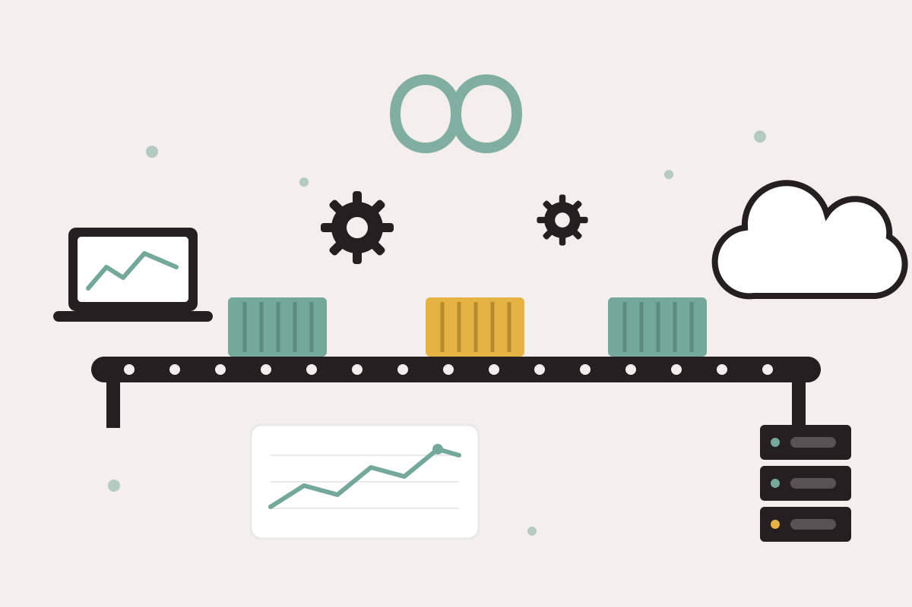

الديف أوبس من الصفر للإنتاج
دليل عملي بالعربي
الديف أوبس مش أداة واحدة، دي طريقة شغل كاملة بتوصل الكود من جهاز المبرمج لبيئة الإنتاج بسرعة وأمان ومن غير تدخل يدوي متكرر.

الفكرة
إيه هو الديف أوبس؟
كلمة DevOps جاية من دمج Development و Operations. قبلها، فريق التطوير كان بيكتب الكود ويرميه لفريق التشغيل يشغله، وكل فريق بيلوم التاني لما حاجة تقع. الديف أوبس بيكسر الحيطة دي: فريق واحد مسؤول عن الكود من أول سطر لحد ما يشتغل قدام المستخدمين.
عملياً ده يعني أتمتة كل خطوة ممكنة: البناء، الاختبار، النشر، والمراقبة. الهدف إن التعديل يوصل للإنتاج في دقايق بدل أسابيع، وإن الرجوع لإصدار سابق يكون ضغطة زرار لو حصلت مشكلة.
القاعدة الذهبية: أي خطوة بتتعمل بإيدك أكتر من مرة، اتعلم إزاي تعملها أوتوماتيك.
المسار
رحلة الكود من الـ commit للإنتاج
- المبرمج يرفع الكود على مستودع Git مشترك.
- نظام الـ CI يبني الكود ويشغل الاختبارات تلقائياً مع كل تغيير.
- لو الاختبارات نجحت، يتبنى إصدار جاهز للتشغيل، غالباً صورة حاوية.
- الـ CD ينشر الإصدار على بيئة الإنتاج أو بيئة تجريبية أولاً.
- المراقبة تتابع الخدمة بعد النشر وتنبهك لأي مشكلة.
العدة
الأدوات الأساسية
-
1
Docker
يغلف التطبيق وكل متطلباته في حاوية واحدة تشتغل بنفس الشكل على أي جهاز.
-
2
Kubernetes
ينظم الحاويات على مجموعة سيرفرات: توزيع، إعادة تشغيل عند الفشل، وتوسيع حسب الحمل.
-
3
GitHub Actions و Jenkins
محركات الـ CI/CD اللي بتنفذ خطوات البناء والاختبار والنشر تلقائياً.
-
4
Terraform و Ansible
البنية التحتية ككود: توصف السيرفرات والشبكات في ملفات قابلة للتكرار والمراجعة.
-
5
Prometheus و Grafana
جمع المقاييس من الخدمات وعرضها في لوحات متابعة مع تنبيهات عند تجاوز الحدود.
نقطة مهمة
الأداة مش هي الهدف
ناس كتير بتبدأ بتعلم Kubernetes قبل ما تفهم ليه الحاويات ظهرت أصلاً. ابدأ بالمشكلة اللي قدامك، واختار الأداة اللي بتحلها، مش العكس.
خطة عملية
تبدأ منين؟
- اتعلم Linux وسطر الأوامر كويس، ده أساس كل حاجة بعدها.
- اتمرن على Git واشتغل بفكرة الفروع والمراجعة.
- اكتب أول Dockerfile لتطبيق صغير تعرفه، وشغله محلياً.
- اعمل pipeline بسيط على GitHub Actions يبني ويختبر مع كل push.
- جرب Kubernetes على جهازك بـ Minikube أو kind قبل ما تروح لسيرفرات حقيقية.
- اربط كل خدمة تشغلها بمراقبة من أول يوم، حتى لو لوحة Grafana بسيطة.
لما توصل للخطوة الأخيرة، هتلاقي إنك عديت على نفس الرحلة اللي الصفحة دي وصفتها: كود، بناء، اختبار، حاوية، نشر، ومراقبة. ساعتها ممكن تدور على شهادة زي CKA أو تساهم في مشروع مفتوح المصدر عشان تثبت خبرتك.